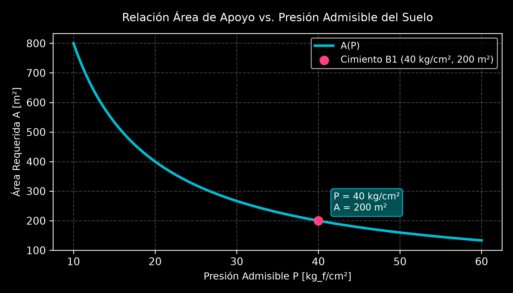
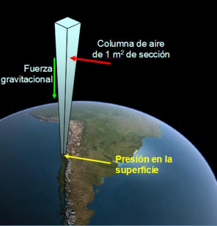
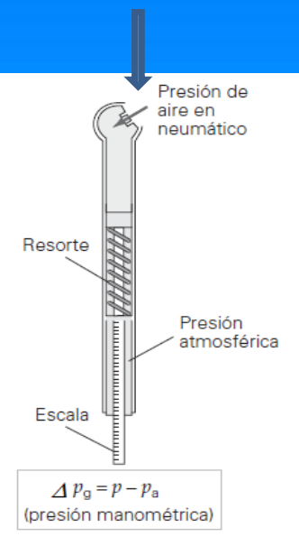
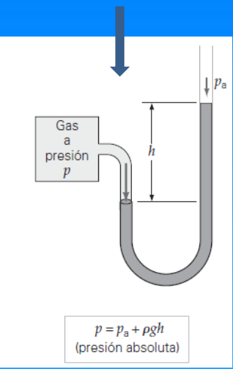
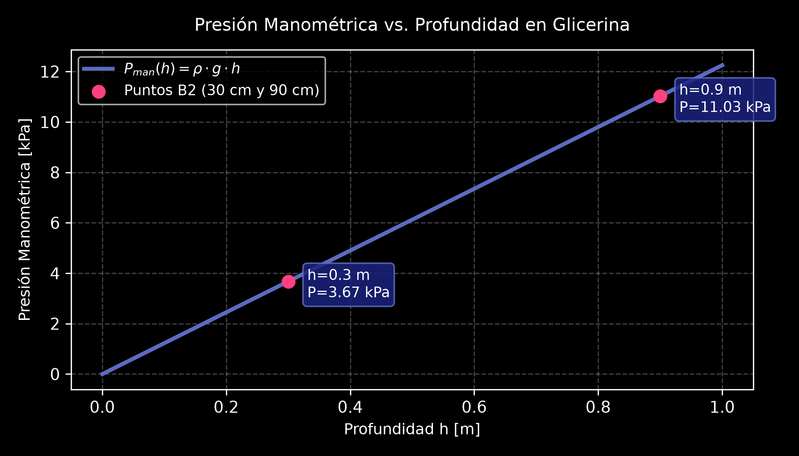
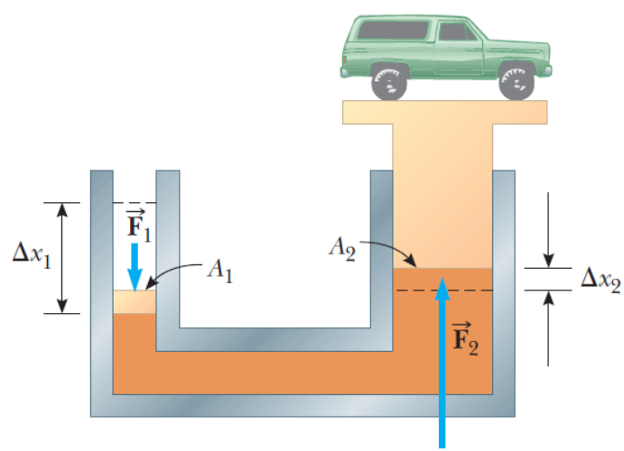
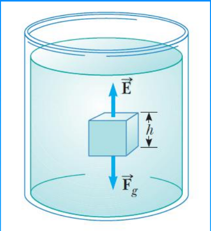
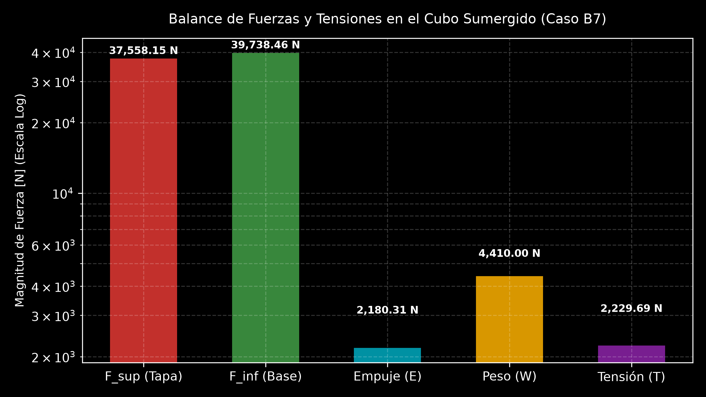

5.1 Hidrostática: Teoría, Principios e Integración Práctica
1. Conceptos Fundamentales y Propiedades de los Fluidos
Un fluido es una sustancia (líquido o gas) que se deforma continuamente bajo la aplicación de un esfuerzo cortante o tangencial, por pequeño que sea. En reposo, un fluido es incapaz de resistir fuerzas tangenciales, adoptando la forma del recipiente que lo contiene.
A. Propiedades Intensivas y Extensivas
- Propiedades Extensivas: Dependen del tamaño o masa del sistema (ej. volumen \(V\), masa \(m\), energía \(E\)).
- Propiedades Intensivas: Son independientes de la masa del sistema (ej. presión \(P\), temperatura \(T\), densidad \(\rho\)).
B. Masa, Densidad y Peso Específico
- Densidad (\(\rho\)): Relación entre la masa de una sustancia y el volumen que ocupa: $\(\rho = \frac{m}{V} \quad \left[\frac{\text{kg}}{\text{m}^3}\right] \quad \left(\rho_{\text{agua}} = 1000 \text{ kg/m}^3\right)\)$
- Peso Específico (\(Pe\)): Peso por unidad de volumen: $\(Pe = \frac{m \cdot g}{V} = \rho \cdot g \quad \left[\frac{\text{N}}{\text{m}^3}\right]\)$
- Densidad Relativa (\(\rho_r\)): Cociente entre la densidad de una sustancia y la de una sustancia patrón (usualmente agua a \(4^\circ\text{C}\)).
C. Presión
La presión es la magnitud escalar definida como la fuerza normal ejercida por unidad de área perpendicular:
Factores de Conversión de Presión:
- \(1 \text{ atm} = 1.013 \times 10^5 \text{ Pa} = 1.013 \text{ bar} = 760 \text{ mmHg} = 760 \text{ torr} = 14.7 \text{ lb/in}^2\).
🛠️ Ejemplo Práctico Aplicado: Presión sobre Cimientos (TP - Ejercicio B1)
Enunciado: El peso de un edificio es de \(8 \times 10^4 \text{ ton}\). Un ingeniero informa que el suelo bajo los cimientos soporta una presión de \(40 \text{ kg/cm}^2\). Determine el área total de apoyo de los cimientos.
Resolución Analítica: 1. Conversión de unidades al SI: * \(W = 8 \times 10^4 \text{ ton} = 8 \times 10^7 \text{ kg}_f\) * \(P = 40 \text{ kg}_f/\text{cm}^2\) 2. Despeje del área \(A\): $\(P = \frac{F}{A} \implies A = \frac{W}{P} = \frac{8 \times 10^7 \text{ kg}_f}{40 \text{ kg}_f/\text{cm}^2} = 2 \times 10^6 \text{ cm}^2 = \mathbf{200 \text{ m}^2}\)$

2. Variación de la Presión en Reposo e Instrumentación
A. Ecuación General de la Hidrostática
Considerando un elemento diferencial de fluido en reposo con área \(A\) y espesor \(dy\) en equilibrio estático (\(\sum F_y = 0\)):
Integrando para un fluido incompresible (\(\rho = \text{constante}\)) entre la superficie (\(y_2\), \(P_0\)) y una profundidad \(h = y_2 - y_1\):
Teorema Fundamental: La presión en un líquido incompresible aumenta linealmente con la profundidad y es uniforme en todos los puntos pertenecientes a un mismo plano horizontal.

graph LR
A["Superficie Libre: Presión Atmosférica (P₀)"] -->|Descenso a Profundidad h| B["Punto a Profundidad h"]
B --> C["Presión Absoluta Total: P = P₀ + ρ·g·h"]
C --> D["Presión Manométrica: P_man = ρ·g·h"]B. Medición de Presión
- Presión Absoluta (\(P_{\text{abs}}\)): Presión total referida al vacío perfecto (\(P=0\)).
- Presión Manométrica (\(P_{\text{man}}\)): Diferencia entre la presión absoluta y la atmosférica local (\(P_{\text{man}} = P_{\text{abs}} - P_0\)).
- Barómetro de Torricelli: Mide la presión atmosférica mediante la altura de una columna de mercurio (\(P_0 = \rho_{\text{Hg}} g h\)).


🛠️ Ejemplos Prácticos Aplicados:
1. Variación de Presión en Glicerina (TP - Ejercicio B2)
Enunciado: Un recipiente contiene glicerina (\(\rho = 1.25 \text{ g/cm}^3\)). Determine la presión manométrica a 30 cm de profundidad y a 60 cm por debajo del primer punto.
Resolución: * A \(h_1 = 0.30 \text{ m}\): $\(P_1 = (1250 \text{ kg/m}^3)(9.8 \text{ m/s}^2)(0.30 \text{ m}) = \mathbf{3675 \text{ Pa}}\)$ * A \(h_2 = 0.30 + 0.60 = 0.90 \text{ m}\): $\(P_2 = (1250 \text{ kg/m}^3)(9.8 \text{ m/s}^2)(0.90 \text{ m}) = \mathbf{11025 \text{ Pa}}\)$

2. Identificación de Fluido en Tubo en U (TP - Ejercicio B3)
Enunciado: Un tubo en U abierto contiene agua (\(\rho = 1000 \text{ kg/m}^3\)). Se vierte un líquido desconocido en una rama formando una columna de 6 cm. La diferencia de altura \(h\) entre las superficies de los dos líquidos es de 1.08 cm. ¿Qué fluido se vertió?
Resolución: Igualando presiones en la interfaz horizontal de separación: $\(\rho_x \cdot g \cdot h_x = \rho_{\text{agua}} \cdot g \cdot (h_x - h_{\text{desnivel}})\)$ $\(\rho_x = 1000 \cdot \frac{6 - 1.08}{6} = \mathbf{820 \text{ kg/m}^3}\)$ * Conclusión: De la tabla de densidades de la cátedra, el fluido vertido es Kerosene.
3. Principio de Pascal
Cualquier incremento de presión aplicado a un fluido incompresible en reposo contenido en un recipiente indeformable se transmite íntegramente a todos los puntos del fluido y a las paredes del recipiente.

🛠️ Ejemplo Práctico Aplicado: Elevador Hidráulico (TP - Ejercicio B4)
Enunciado: En un elevador hidráulico, el aire comprimido ejerce una fuerza sobre un émbolo de radio \(r_1 = 5 \text{ cm}\). Se transmite la presión a un émbolo de radio \(r_2 = 15 \text{ cm}\) para levantar un auto de \(13300 \text{ N}\). a) ¿Qué fuerza \(F_1\) debe ejercer el aire comprimido? b) ¿Cuál es la presión del aire?
Resolución Analítica: a) Relación de áreas \(A_2 / A_1 = (r_2 / r_1)^2 = (15 / 5)^2 = 9\): $\(F_1 = \frac{F_2}{9} = \frac{13300 \text{ N}}{9} = \mathbf{1477.78 \text{ N}}\)$ b) Presión ejercida: $\(P = \frac{F_1}{\pi r_1^2} = \frac{1477.78 \text{ N}}{\pi (0.05 \text{ m})^2} = \mathbf{1.88 \times 10^5 \text{ Pa}}\)$
4. Principio de Arquímedes, Flotación y Fenómenos Superficiales
A. Principio de Arquímedes
Todo cuerpo total o parcialmente sumergido en un fluido experimenta una fuerza de flotación o empuje (\(E\)) vertical hacia arriba igual al peso del volumen del fluido desplazado:

B. Tensión Superficial (\(\gamma\)) y Capilaridad
- Tensión Superficial: Trabajo necesario para aumentar la superficie de un líquido por unidad de área. En películas con dos caras: $\(\gamma = \frac{F}{2d}\)$
- Capilaridad (Ley de Jurin): Elevación o descenso de un líquido en un tubo capilar de radio \(r\): $\(h = \frac{2 \gamma \cos\theta}{\rho g r}\)$
🌟 5. Caso Integrador de Cierre (TP - Ejercicio B7)
Enunciado: Un cubo de arista \(L = 0.600 \text{ m}\) y masa \(m = 450 \text{ kg}\) se encuentra suspendido por una cuerda en un tanque abierto lleno de líquido de densidad \(\rho = 1030 \text{ kg/m}^3\). La cara superior está a una profundidad \(h_1 = L/2 = 0.300 \text{ m}\).
Calcular: a) Fuerza descendente ejercida por el líquido y la atmósfera en la cara superior. b) Fuerza ascendente en la cara inferior. c) Empuje hidrostático. d) Tensión en la cuerda y relación entre las cantidades.
graph TD
subgraph S1["Balance de Fuerzas en el Cubo (L = 0.6 m)"]
F_sup["Fuerza Descendente Tapa: F_sup = 37,558.15 N"] --> Cubo["Cubo Sumergido en Líquido (m = 450 kg)"]
Tension["Tensión Cuerda: T = 2,229.69 N (Hacia Arriba)"] --> Cubo
Empuje["Empuje Hidrostático: E = 2,180.31 N (Hacia Arriba)"] --> Cubo
Peso["Peso del Cuerpo: W = 4,410.00 N (Hacia Abajo)"] --> Cubo
F_inf["Fuerza Ascendente Base: F_inf = 39,738.46 N"] --> Cubo
endResolución Analítica Paso a Paso:
-
Fuerza Descendente en Cara Superior (\(F_{\text{sup}}\)): $\(P_{\text{sup}} = P_0 + \rho g (L/2) = 101300 + (1030)(9.8)(0.300) = 104328.2 \text{ Pa}\)$ $\(F_{\text{sup}} = P_{\text{sup}} \cdot L^2 = (104328.2)(0.36 \text{ m}^2) = \mathbf{37558.15 \text{ N}}\)$
-
Fuerza Ascendente en Cara Inferior (\(F_{\text{inf}}\)): $\(P_{\text{inf}} = P_0 + \rho g (1.5 L) = 101300 + (1030)(9.8)(0.900) = 110384.6 \text{ Pa}\)$ $\(F_{\text{inf}} = P_{\text{inf}} \cdot L^2 = (110384.6)(0.36 \text{ m}^2) = \mathbf{39738.46 \text{ N}}\)$
-
Empuje Hidrostático (\(E\)): $\(E = F_{\text{inf}} - F_{\text{sup}} = 39738.46 - 37558.15 = \mathbf{2180.31 \text{ N}}\)$ (Verificación por Arquímedes: \(E = \rho_{\text{liq}} g L^3 = 1030 \cdot 9.8 \cdot (0.6)^3 = 2180.30 \text{ N}\))
-
Tensión en la Cuerda (\(T\)) y Relación de Fuerzas: Del equilibrio vertical (\(\sum F_y = 0 \implies T + E - W = 0\)): $\(W = m g = (450 \text{ kg})(9.8 \text{ m/s}^2) = 4410 \text{ N}\)$ $\(T = W - E = 4410 \text{ N} - 2180.31 \text{ N} = \mathbf{2229.69 \text{ N}}\)$
